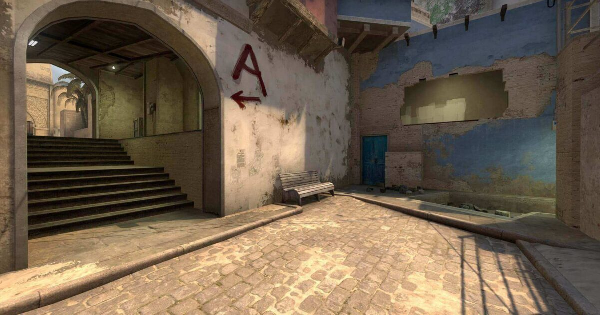

CS:GO has multiple modes that use similar maps. These include Defusal, Deathmatch, Wingman and Hostage. Defusal pits players in a 5 vs 5 situation, with one team defending sites from bombs, while the other has to plant the bombs. Wingman is similar except that it is a 2 vs 2. Deathmatch has a team and solo mode, where both objectives are to kill as many opposing players first. Hostage is similar to Defusal, but instead of bombs, one team has to resque a hostage, while the other guards the hostage.